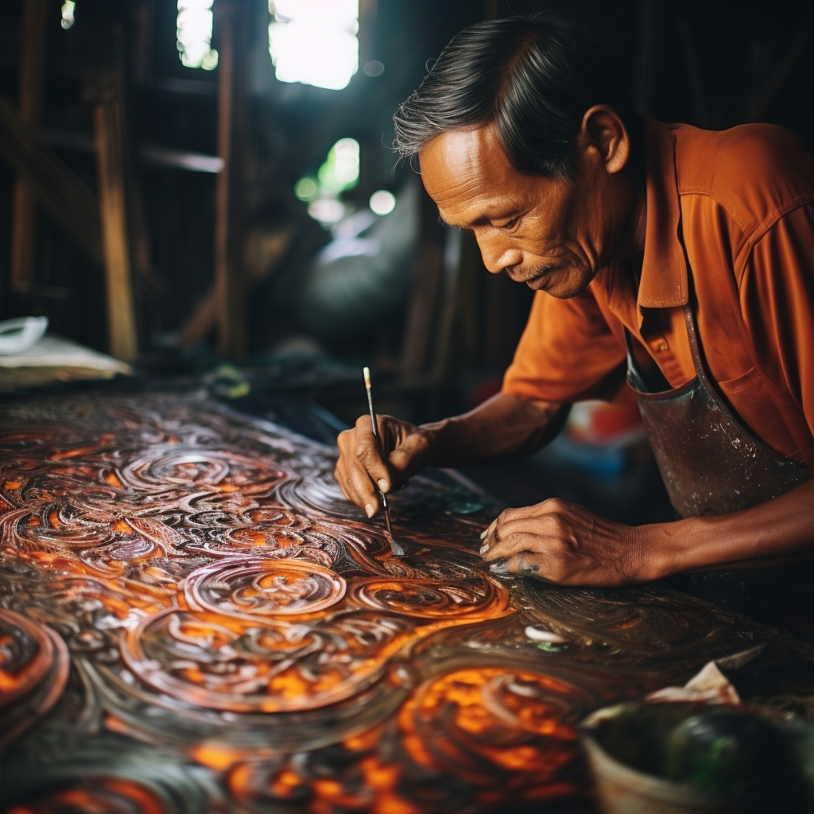

Traditional Batik Artistry
Delve into the world of dedicated artisans meticulously crafting intricate batik patterns using a delicate technique of wax-resist dyeing. With utmost precision, they apply hot wax onto fabric, creating beautiful motifs that resist the subsequent application of vibrant dyes. The process is repeated multiple times, resulting in stunning, multi-layered designs that reflect Indonesia's diverse cultural symbols and narratives. Witnessing this meticulous artistry is a testament to the creativity and patience embedded in Indonesian cultural heritage.